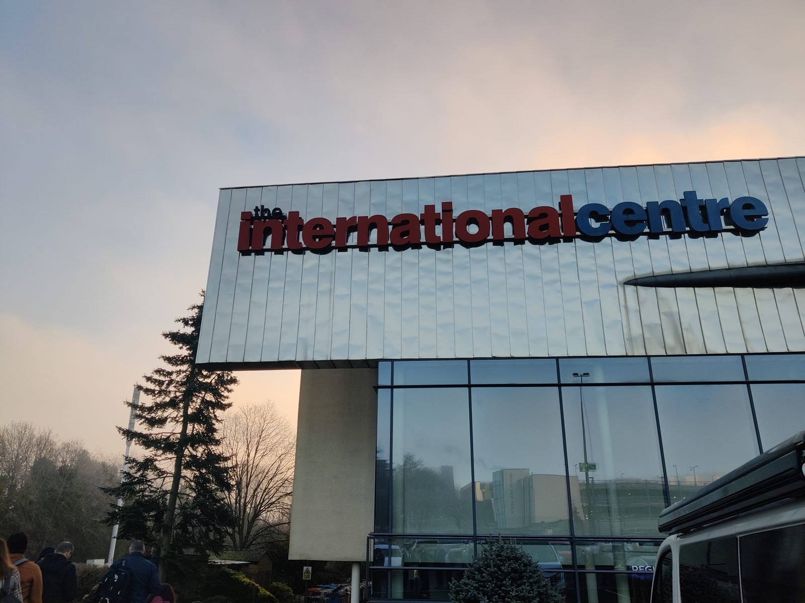
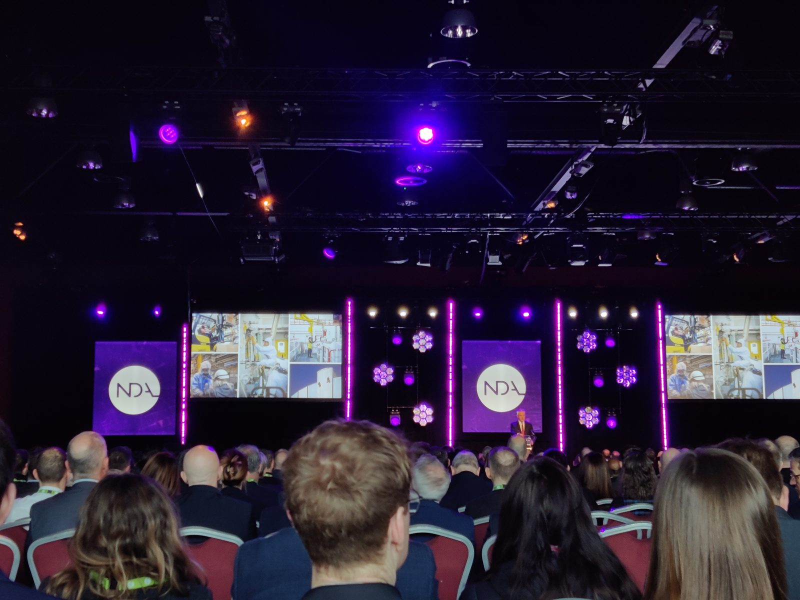
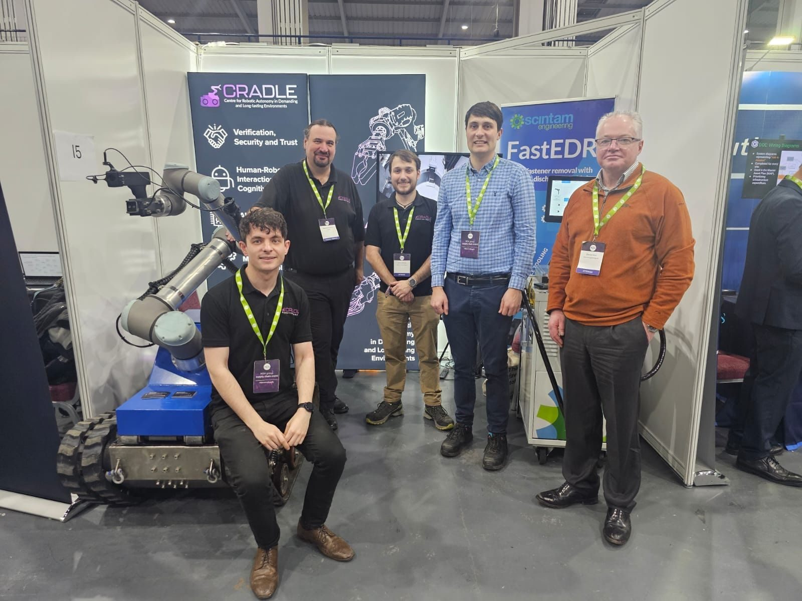

What does it take to keep the NDA up-to-date and fuelled for the future of decommissioning?
Well, that’s what I wanted to find out as I attended the NDA Supply Chain Event 2025. The Centre for Robotic Autonomy in Demanding and Long-lasting Environments (CRADLE) took part in the event with a stand to showcase the recent work our group achieved in collaboration with Scintam Engineering, to showcase our RAISE (Robotic Automation of Innovative Spark Erosion) technology. It was exciting to explore how our innovative robotic EDM (Electrical Discharge Machining) solution could help deliver nuclear decommissioning activities more safely, quickly, and cleanly.
The day was full of panel talks from various groups and OpCo's talking about the amazing work they are doing and current challenges they face. There were 2000 attendees and over 300 exhibitors at the event showing the work they do across the sector from HR to engineering and security.
It was great to network with the wider NDA group and see the interesting products and projects that are going on. It was also nice to catch up with everyone and make some new connections, engaging with them about my PhD research within CRADLE which is centred on using robotics for radioactive contamination monitoring. A project funded by NRS Dounreay.
This kicks off a busy couple of months for myself and my project where I will be attending several nuclear events as well as building an initial demonstrator through the RAICo Junior Fellowship.
Watch this space for updates and cool photos! And reach out if you're interested in engaging further.


